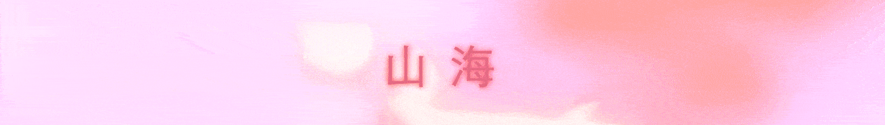
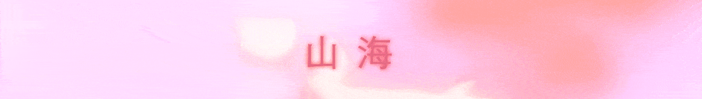

Shanhai 山海
3D Environment Modeling / Motion Graphics
SHANHAI is a series of still and animation frames based on an imaginary terrain inspired by the mythic geography and beasts from the Chinese book "Classic of Mountains and Seas". The name SHANHAI in Chinese means "Mountain Sea"(山海). Built to be a meditative experience, the piece puts the audience in an eerie world with a lot of organic creatures.


 
